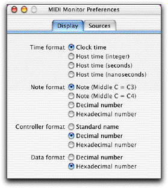
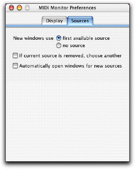

MIDI Monitor
Documentation
Basics
MIDI Monitor is a utility for Mac OS X which displays incoming MIDI signals in a variety of formats, with filtering by message type and channel. Musicians will find it handy for tracking down confusing MIDI problems, and programmers can use it to test MIDI drivers and applications.
MIDI Monitor is FREE to download and use.
The MIDI Monitor web page can be found at this URL:
http://www.snoize.com/MIDIMonitor/
Please check there for news and updates.
How to use it
When you start up MIDI Monitor, it will automatically open a new document, which listens to the first available source of MIDI data.

At the top of the window is a popup menu, which contains one item for each input port on your MIDI interface. Use this menu to select the MIDI source to watch.
(If your MIDI devices don't appear in the menu, see the Troubleshooting section.)
Other applications on the computer may also appear in this menu, if they are running and can provide MIDI data.
At the bottom of Source menu is an item named "Act as destination for other programs". If you choose this, other applications will be able to send their output to this MIDI Monitor window. (In the other applications, the output's name will be the same as the name of the window.)
The main part of the window is a list of events that MIDI Monitor has received, in chronological order. The columns are as follows:
Time: When the event was received by the computer
Message: What kind of event happened (e.g. note on, note off, controller)
Chan: What channel the event was on. (Some types of messages do not have a channel.)
Data: The specific data in the event. The format depends on the type of message. (Some messages have no data.)
System Exclusive (or SysEx) events are displayed with a triangle next to them. Click the triangle to show the full contents of the event. The byte offset of each row is shown.
You can clear the list of events by pressing the Clear button, using the Special->Clear Events menu command, or typing Command-K. You can also change the number of events that the list will remember by changing the number in the text field.
MIDI Monitor also provides a filter, so you can see only the events you are interested in. To show the filter controls, click the button at the bottom of the window (with the triangle).
New windows start with all of the checkboxes checked, meaning that all messages are displayed. The large checkboxes control the filters for a whole category of messages; the small checkboxes each control the filter for one specific type of message. For "voice" messages, which include a channel number, you can also choose whether to listen to all channels or just one.
MIDI Monitor uses the standard Mac interface for dealing with documents; just open, close, and save as usual. A MIDI Monitor document saves the selected source, number of events to remember, filter settings, and window position. MIDI events are not saved as part of the document.
Preferences
The preferences window lets you change the way that MIDI Monitor displays values, as well as some other behavior. Changes in this window take effect immediately, and are automatically saved.
Display Preferences

Time format: The method of displaying the timestamps of events.
- Clock time: Shows the timestamp in terms of normal human time, to the nearest 0.001 second. This is the most useful setting.
- Host time: Shows the timestamp in terms of the computer's internal timebase. This is not very interesting for humans, but programmers may find it useful.
- Integer: the time as returned by AudioGetCurrentHostTime() or UpTime(). This is an unsigned, 64-bit integer, which starts at 0 when the computer is started. This number will always increase at the same rate while the machine is running; however, one unit may represent different amounts of time on different machines, or different revisions of the operating system.
- Seconds: The integer time divided by the number of ticks per second, as reported by AudioGetHostClockFrequency(). The value is shown to three decimal places.
- Nanoseconds: The same as above, but with more digits displayed.
Note format: The method of displaying the musical note associated with note-on and note-off events.
- Musical note: The name of the note in standard MIDI notation. C3 means middle C (note number 60).
- Musical note (Yamaha): Most manufacturers of MIDI equipment use the standard above. However, some manufacturers (most notably Yamaha) name this note C4, an octave higher.
- Decimal number: The note number in base 10, from 0 to 127.
- Hexadecimal number: The note number in base 16, from $00 to $7F.
Controller format: The method of displaying the name or number of control events.
- Standard name: The name of this controller as given in the MIDI standard. For example, controller 72 means "Release Time". Controllers without standard names are displayed as decimal numbers. Some controllers come in pairs; one controller conveys the "coarse" value (or high byte) and the other conveys the "fine" value (or low byte).
- Decimal number: The controller number in base 10, from 0 to 127.
- Hexadecimal number: The controller number in base 16, from $00 to $7F.
Data format: The method of displaying any other data in events.
- Decimal number: The value in base 10. One byte values range from 0 to 127; signed two byte values range from -8192 to 8191.
- Hexadecimal number: The value in base 16. One byte values range from $00 to $7F; two byte values range from $0000 to $3FFF, with $2000 as the "center" value.
SysEx format: The number of bytes to display in each row of SysEx data. You can choose 8 or 16.
Sources Preferences

New windows: You can choose whether new windows should automatically use the first available MIDI source, or whether they should receive no events until you choose a source from the menu.
If current source is removed, choose another: A source may disappear when its device is unplugged, or if the application that provides it quits. Normally, when this happens, MIDI Monitor will clear out the Source menu, and receive no more events. However, if you check this checkbox, MIDI Monitor will automatically switch to using the first available source.
Automatically open windows for new sources: If this checkbox is checked, when new sources become available, MIDI Monitor will open a new window for each one.
Advanced Features
You can use the menu command "Restart MIDI", in the "Special" menu, to reinitialize the entire MIDI system and look for available devices. Generally you shouldn't need to do this, but I've included it so driver authors can use it for testing. (Developers: the menu command just calls the MIDIRestart() function.)
(Note: This command is only available on Mac OS X 10.1 and later.)
If the Source menu is blank, then there are no MIDI devices available. Remember that you must have a Mac OS X driver for your device; Mac OS 9 drivers will not work. At the time of this writing, Mac OS X drivers are available for these devices:
- MIDIMAN USB interfaces
- Mark of the Unicorn (MOTU) USB interfaces
- Roland UM-1, PC-300, S-MPU64, and possibly others (unofficial, not created by Roland)
Mac OS X also supports any USB MIDI Class-compliant device, with no special driver necessary; however, no such devices are shipping yet.
Note: If you have a device hooked up, and the proper driver, but you don't see it in the menu, you may be running into a problem with the Classic environment. Classic tends to grab USB devices for its own exclusive use, and doesn't let programs on the native Mac OS X side get to them. Try shutting down Classic and starting MIDI Monitor again. (If MIDI Monitor is started first, and is running when Classic starts, you will not encounter this problem.)
Note: The current MOTU driver (as of 29 December 2001) provides a source named "All Ports" for some devices. It has been reported that this source doesn't work--the interface's lights blink, but nothing is shown in MIDI Monitor. This is most likely a bug in the driver, and not MIDI Monitor's fault.
Contact
Please send questions or comments to: MIDIMonitor@snoize.com
If you find this program useful, I'd love to hear about it! And if you encounter bugs or have suggestions for improvement, please let me know.